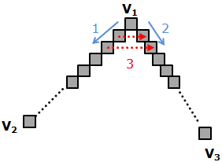

Software Rasterization Algorithms for Filling Triangles |
 Download Article and Source (153 kb)
Download Article and Source (153 kb)
I. Introduction
This article discusses various algorithms how to draw a solid triangle. This task is a basic requirement of a graphic engine and is often also called 'Triangle Rasterization/Rasterisation'. Three different approaches are presented which are implemented in the applet above.
Note that also the scanline algorithm can be used, but it is designed for the general case of filling a polygon and thus a bit overdesigned.
todo: solid / fluxionary with different vertice colors, not all are equally fast
A required prerequisite for the first two algorithms (Standard & Bresenham) is a defined order of the three triangle vertices. So we know which is the most top vertice respectively the lowest vertice. Assuming the origin of the coordinate is the topleft corner, thus the lower a vertice is the bigger its y-coordinate is, we define the order v1.y <= v2.y <= v3.y. The sorting of the three vertices has to be performed as very first step.
The standard algorithm uses the fact that the two easy cases, a flat bottom and a flat top triangle, are easy to draw.
This is due to the fact that the difference in y is equal for both legs. Looking at the figure below, it's easy to see that y1 - y2 = y1 - y3. The idea of this algorithm is to traverse both legs step by step in y-direction and draw a straight horizontal line between both endpoints.
Therefore the change of x per y-step (that is dx/dy = 1 / slope = invslope) is required, contrary to the normal slope which gives the delta in y per x-step.
The algorithm now performs as following:
First calculate invslope for each leg. Then just iterate from top (y1) to bottom (y2) and add invslope1 and invslope2 to temporary variables - this gives the endpoints of a straight line. No the triangle can easily be drawn by plotting horizontal lines - see the pseudocode of fillBottomTriangle().
 |
|
Drawing a float top triangle is as easy as drawing the flat bottom triangle. It makes sense to change the y-iteration direction so that vertice v3 serves as common starting point and iteration goes from bottom to top; the actual algorithm is basically the same as for the flat bottom case:
 |
|
Finally the general case: The basic idea of drawing a general triangle is to decompose it into two triangles - a flat bottom triangle and a flat top triangle - and draw them both.
The main task is to find the intersection boundary which splits the triangle. Actually we need to find a fourth vertex v4 which is the intersection point of the boundary line and the long edge of the triangle. Let's have a look at outline below:

The y-coodinate of v4 is obvious because v4 lies on the same horizontal line (the intersection boundary) as v2, thus v4.y = v2.y.
To find v4.x, the Intercept Theorem can be applied, see the derivation on the right side of above picture. Finally we have flat bottom triangle Δ1 = (V1, V2, V4) and a flat top triangle Δ2 = (V2, V4, V3) which both can be rasterized with the algorithms above.
Here the final algorithm for all triangles:
drawTriangle() |
I assume the reader knows the Bresenham algorithm for drawing lines in order to understand this approach - if not, please check a good article before proceeding, e.g [1]... (on no! house advertising ;))
The main idea is to use the same partition approach as in the previous chapter, thus splitting a triangle into two, each with a flat side. I'm not going to repeat the partition as it's really the same, so the explanation just focus on rasterizing a flat side triangle.
So let's start: Suppose we just want to draw the line from v1 to v2 using the bresenham algorithm. Ignoring breshenham details like swapping variables depending on the slope etc, we also assume for our example without loss of generality that we go in y-direction and having the error value e = dx/dy. So we iterate in the y-direction and in each step as long as e >= 0 go into the x-direction. Till this point we completely comply with the bresenham algorithm - nothing special.
What we notice is that because we do step in y-direction, the bresenham algorithm provides us a point on the line for each y-coordinate between v1 and v2. So why not use the bresenham algorithm to plot also the line from v1 to v3? If we also find the corresponding point - that is the point with the same y-coordinate on the edge v1v3 - we just have to draw horizontal lines to fill the triangle. This implies following procedure:
|  |
|
I am going to waive the source code listing at this point as it's lengthy and nothing more than the bresenham algorithm runs in parallel for two lines. For further information please check the actual source code in the archive.
IV. Barycentric Algorithm
For the Barycentric approach, we will again reuse existing knowledge - by applying the Barycentric Algorithm for deciding if a point lies inside or outside a triangle. This is discussed in [2] (oh no! No more house advertising... ).
The main idea is as follows: At first determine the bounding box of the triangle. Afterwards test for each point in the box if it lies inside the triangle - if yes just plot the pixel. Yeah... it's really so easy!
 |
In contrast to the other algorithms above, it's not necessary to sort the vertices. Following code snippet determines the bounding box by calculating the minimum/maximum x/y coordinate of all three vertices:
|
Finally, iterate over each point of the bounding box using two nested loops and paint the pixel if it's inside the triangle:
/* spanning vectors of edge (v1,v2) and (v1,v3) */ for (int x = minX; x <= maxX; x++) |
Unfortunately, the simplicity of this algorithm comes at the price of low execution speed compared to the other two approaches.
V. Final wordsI hope this article was interesing to read and the reader learned something new. I want to mention that some common topics were left out from discussion:
The problem of correct rounding for example - we are working with floats, but the final points on the screen are pixels and thus integers. So it might worth to check that no pixels are left out, especially near the edges and vertices but on the other hand to ensure not to plot pixels on the outer border of the edges.
Furthermore, the first two algorithms split the triangle into two. This results in the fact that the flat side of the bottomflat triangle and also the flat side of the topflat triangle is drawn - so this falt edge it's plotted twice! Keep this is in mind - e.g. when using fancy algorithms for coloring the edges, this might cause disturbanes.
That's it. Hope you enjoyed this article and find the applet + source useful!
References:
[1] Bresenham Algorithm Article
[2] Point in Triangle Algorithms Article
Sunshine, May 2012
This site is part of Sunshine's Homepage